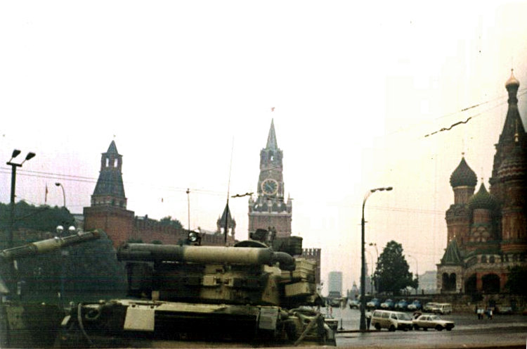

The August 1991 coup (GKChP) and Uzbekistan's independence
The coup attempt in Moscow on 19–21 August 1991 — the GKChP — shook the central Soviet authority and accelerated the union republics' declarations of independence. Ten days after the coup collapsed, on 31 August 1991 the Supreme Council of the Uzbek SSR declared state independence. This historical article covers the course of the coup, its effect on Uzbekistan, the 31 August decision, the 29 December referendum, and the dissolution of the USSR — strictly on verified sources and exact dates.

The coup attempt in Moscow in August 1991 was a decisive event of the Soviet Union's final months and accelerated Uzbekistan's path to independence. This historical article states exact dates and facts strictly on the basis of verified sources — Britannica, scholarly works on the history of Uzbekistan and Central Asia, and reliable news archives. The facts have been cross-checked against two or more sources.
The GKChP coup (19–21 August)
The coup attempt lasted from 19 to 21 August 1991. It was led by the "State Committee on the State of Emergency" (Russian acronym GKChP); Vice President Gennady Yanayev was proclaimed "acting president." The committee isolated Soviet President Mikhail Gorbachev at his residence in Foros, Crimea, claiming he was "unable to perform his duties for health reasons." RSFSR President Boris Yeltsin led the resistance from the parliament building (the "White House") in Moscow and on 19 August, standing on a tank, declared the GKChP's actions illegal.
The collapse of the coup
The coup collapsed on 21 August: the plotters left Moscow, the USSR Supreme Soviet declared the GKChP's acts void, and Gorbachev returned to Moscow on 22 August. The failed coup fatally weakened both Gorbachev and the central Soviet authority and accelerated the breakup of the union. It also derailed the new Union Treaty process that Gorbachev had planned to sign on 20 August.

Uzbekistan's position
At that time Islam Karimov was First Secretary of the Communist Party of Uzbekistan and President of the Uzbek SSR. According to retrospective analyses by sources such as Eurasianet and Radio Free Europe/Radio Liberty (RFE/RL), Karimov initially took a cautious position during the coup days — something later little covered in official history — and in the all-union referendum of March 1991 he had favored preserving the USSR. His exact position remains disputed among historians and journalists; the sources do not reach a single conclusion. The firmly established fact is that once the coup failed, Uzbekistan, like the other republics, soon moved to independence.
31 August: the declaration of independence
On 31 August 1991, in Tashkent, an extraordinary session of the Supreme Council of the Uzbek SSR adopted the Declaration of State Independence and passed the law "On the Fundamentals of State Independence of the Republic of Uzbekistan." The same session declared 1 September to be Independence Day, celebrated every year since. This decision was taken just ten days after the coup in Moscow collapsed.
The chain of cause and effect
The sequence of events is clear: on 19–21 August the coup was attempted and collapsed, and then in late August came a wave of republic independence declarations — Ukraine on 24 August, Belarus on 25 August, Kyrgyzstan and Uzbekistan on 31 August. The failed coup was the direct catalyst: it discredited the central Soviet authorities and prompted the republics, Uzbekistan among them, to move to independence within days.
29 December: referendum and first election
On 29 December 1991 Uzbekistan held an independence referendum and the country's first direct presidential election on the same day. According to official results, about 98.2% (98.26%) of participants in the referendum approved independence. In the presidential election Islam Karimov won with about 86% of the vote; the opposing candidate, Muhammad Salih of the Erk party, received about 12%. This was the only presidential election in Uzbekistan's history to feature a genuine alternative candidate.
The dissolution of the USSR (the wider picture)
The declarations of independence were part of a wider process. On 8 December 1991 the Belovezha Accords (Russia, Ukraine, Belarus) declared the USSR dissolved and created the Commonwealth of Independent States (CIS). On 21 December the Alma-Ata Protocol brought 11 former republics, including Uzbekistan, into the CIS. On 25 December Gorbachev resigned, and on 26 December the USSR was formally dissolved and ceased to exist.
Key dates
Coup: 19–21 August 1991; Gorbachev's return to Moscow: 22 August; Uzbekistan's independence law: 31 August; Independence Day: 1 September; referendum (98.26%) and Karimov's election with about 86%: 29 December; formal dissolution of the USSR: 26 December 1991.

Sources
- Encyclopaedia Britannica — Soviet Union: The attempted coup (GKChP rahbarlari, Gorbachyov, barbod bo'lishi)
- Wikipedia — Timeline of the 1991 Soviet coup attempt (aniq sanalar: 19 avgust e'lon, Foros, 21 avgust barbod)
- Wikipedia — Islam Karimov (31-avgust 1991 mustaqillik e'loni; dekabr saylovi ~86% / Solih ~12%)
- Eurasianet — Uzbekistan: The Life and Legacy of Islam Karimov (to'ntarish kunlaridagi pozitsiya; mart 1991 referendumi)
- Wikipedia — Alma-Ata Protocol / Dissolution of the Soviet Union (21-dek Almaota, 25-dek iste'fo, 26-dek tarqalish)